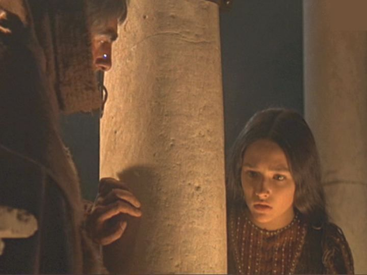
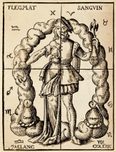

In this game you will become Friar Lawrence, a benedictine Monk in late 16th century Italy.
You have sworn an oath of cellebacy, and to do the work of god.
You will experience the story of Friar Lawrence, however your decisions do not have to mirror the original ones.
Are you ready to play?
As you are picking flowers for a potion, you say "Virtue itself turns vice, being missaplied,/ And vice sometime by action dignified."
What you mean by this is that by doing the wrong thing, one can achieve the right outcome.
Romeo, the sole son of the noble Montague family, comes to you with a request.
He asks, "I'll tell thee as we pass; but this I pray, /
That thou consent to marry us to-day."
The night before, young Romeo met Juliet. And to prove his deep love for her, he wants you to marry them.
You respond with shock.
"Holy Saint Francis, what a change is here!/
Is Rosaline, whom thou didst love so dear,/
So soon forsaken? young men's love then lies/
Not truly in their hearts, but in their eyes."
What do you do?
Romeo goes to Friar John to marry him to Juliet. Friar John realises that you refused, and, not wanting to defy you, refuses also.
Romeo goes home, cries, and wonders if Rosaline is free for a date.
You agree to marry them, hoping it will end the feud between the Montagues and the Capulets.
"But come, young waverer, come go with me, / In one respect I'll thy assistant be; / For this alliance may so happy prove / To turn your households' rancour to pure love."
Marrying the two without their parents' consent is wrong, but the right outcome may be achived.
Romeo and Juliet are secretly married in your cell.
Later on, Romeo is banished from Verona for killing Tybalt, Juliet's cousin.
The Prince declares, "Let Romeo hence in haste, /
Else, when he's found, that hour is his last." Romeo escapes to your cell, and begs in desperation for your advice.
You console Romeo, reminding him of all the reasons he has to be happy and blessed. "Tybalt would kill thee,/ but thou slewest Tybalt: there art thou happy."
You then advise him to hide out in Mantua, a nearby town, until you can devise a plan to reunite the young lovers.
Romeo feels much better. He realizes that he hasn't eaten since meeting Juliet.
Now that his blood sugar levels are normalized, he abandons his poorly thought out plans.
Meanwhile, Juliet has been promised to Paris (a much older nobleman of Verona). You have been charged with marrying them.
After you talk with Paris about wedding preparations, Juliet enters. In a state of panic, she says, "Be not so long to speak, I long to die, / If what thou speak'st speak not of remedy."
You may pick one of two solutions.
Option 1: Give Juliet a potion that will put her into a deep sleep, making her appear dead.
Option 2: Suggest that Juliet see a doctor because her four humours are out of balance.
The next morning, Juliet is found by her Nurse, "dead".
Balthasar, Romeo's messenger, attends her funeral and rides quickly to Mantua to inform his master Romeo of the sad news.
You go to the Capulet's vault to be with Juliet when she wakes only to find Romeo lying down, dead in the tomb.
You try to get Juliet to come with you, but she refuses. In fear of being arrested, you run away.

Juliet goes to the doctor, and he tells her that she has too much blood.
As you know, it is believed that all humans have four humours in their body that balance their personality and health.
With too much blood in her system, Juliet has gone crazy and can't handle life.
The doctor's solution is to place leeches on her body to suck out the excess blood.
Instead of being placed in a tomb, Juliet is instead in her bed, recovering from the bloodletting.

You return to the tomb, having been captured by the Third Watchman.
The Prince enters, and forces you to explain the entire fiasco.
You finish with "...if aught in this / Miscarried by my fault, let my old life / Be sacrific'd, some hour before his time, /